This article accompanies the 27-minute video, which shows the full demonstration and endpoint consoles in sequence.
Abstract
This evaluation used two custom payloads: a ransomware test payload with a full encryption and decryption workflow, and a minimal C2 client written for the demonstration. The C2 client communicates over HTTP only inside the lab network, uploads a screenshot every 30 seconds, and receives PowerShell commands from the server. The products evaluated were Elastic Security and Microsoft Defender for Endpoint Plan 2, and the scenarios covered both administrator and standard-user contexts.
This evaluation focuses on execution after injection: whether module stomping changes how later call sites are attributed to modules, and how Elastic Security and MDE P2 record or block the resulting activity.
Three Concepts
Process injection
Gets code into another process. In this project, injection operates independently of module stomping.
Module stomping
Uses the address range of a mapped module to hold replacement code, so execution still falls within the module image's virtual address range.
Call-stack spoofing
Usually means deliberately constructing or manipulating a more complete-looking call chain. Module stomping can change how the call site is attributed, but it does not create a complete, legitimate-looking call chain by itself.
Module Stomping and Its Role in This Project
In this project, the replacement code runs inside the mapped range of a normally loaded DLL. When it calls a Windows API, the return address left on the stack can also fall in that range. Telemetry that resolves addresses against module boundaries may therefore attribute the call site to the DLL rather than to anonymous or private executable memory. This changes call-site attribution; it does not turn the replacement code into the DLL's original code.
It does not fabricate a complete call chain; other call-stack handling was still used during preparation. For later calls from the stomped region, attribution follows the location of the return address, removing the need to synthesize extra frames solely to make those call sites resolve to a module.
Why I Combined Injection with Module Stomping
This project started with a general PE-to-shellcode problem. I quickly ran into two separate issues: whether the loader could recreate the execution environment expected by the original PE, and how endpoint telemetry would attribute later call sites once the payload was running. Even if a loader stub handles image loading well, converting an arbitrary PE does not automatically give it a plausible or deliberately constructed call chain.
If the converted code runs directly from anonymous or private executable memory, return addresses from later API calls may point back into that region. Another option is to design each original program around how its call stack will look. But that ties the payload closely to its execution container and undercuts the main goal of a general PE-to-shellcode tool.
I eventually split those jobs apart: a separate injection mechanism first establishes execution inside the target process, the host then loads the selected image through the normal module-loading path, and module stomping determines where the later payload code resides and runs. This lets the original PE remain independent of the target process, final module, and any particular stack layout. The external execution container handles module attribution for later call sites.
This approach overlaps with public work on module overloading and module shifting, though the image source, loading order, and purpose differ.
I happened to choose msi.dll for this test; there was no deeper reason. It is not especially well suited to stomping. In fact, the CFG/XFG compatibility issues created by that choice took considerable extra work.
Evaluation Design
This evaluation used two custom payloads and no third-party ransomware or public C2 framework. The ransomware test payload uses AES-256-GCM and targets files on the system drive based on a configured list of more than 180 extensions, skipping explicit exclusions and paths it cannot access. It adds the .lavender extension and a custom header marker to each processed file; the baseline test also verified successful decryption and recovery. I finished the payload in April 2026 and have since iterated on it and repeated the tests several times.
The C2 client was a minimal prototype I wrote specifically for this demonstration. It communicates only over HTTP inside the isolated lab, uploads a screenshot every 30 seconds, and receives server-issued PowerShell commands. I used it only to create an observable chain of network, process, and registry activity, not to compare it with a mature C2 framework. The two payloads differ in maturity and validation history, so their detection outcomes should not be read as a comparison of sophistication.
The tests mainly examined whether the payload completed execution, whether the product alerted or blocked it, and whether activity without an alert still appeared in endpoint telemetry. The administrator and standard-user scenarios used different target processes. Below, 'successful execution' means that the activity was not stopped in time.
| Scenario | Environment and context | Observed outcome |
|---|---|---|
| Ransomware baseline | No EDR, administrator | Executed and recovered |
| Injected ransomware | Elastic, administrator, target spoolsv.exe | Executed, no alert |
| Injected ransomware | MDE P2, standard-user account, target explorer.exe | Executed, no alert |
| C2 baseline | No EDR, standalone client | Functionality verified |
| Standalone C2 | Elastic, medium integrity | Standalone C2 process terminated after the alert |
| Injected C2 | Elastic, administrator, target spoolsv.exe | Child blocked; client survived |
| Injected C2 | MDE P2, standard-user account, target notepad.exe | Executed, no alert |
I excluded the Elastic test run with a restricted administrator token from the reported results. An apparently unrelated rule kept firing, and I have not identified why, so I set the scenario aside for now.
Ransomware: No Alert Does Not Mean No Evidence
In the Elastic administrator scenario, the payload entered spoolsv.exe and completed file processing; Elastic's ransomware canary file was encrypted as well, and no corresponding alert appeared during the test. In call-stack telemetry, each observed file rename and modification event contained a plausible, module-resolved stack: frame addresses resolved to recognized Windows modules, and the originating call site was attributed to msi.dll rather than to a private, image-unbacked executable memory address.
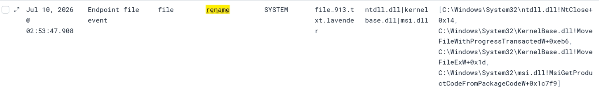
Elastic recorded more than 10,000 rename events and roughly 1,000 modification events. The two event types need not correspond one-to-one; the difference may reflect how they are collected, aggregated, or queried.
In the MDE P2 standard-user scenario, relevant cloud protection, attack surface reduction, and Controlled Folder Access settings were enabled, and those controls were validated before the main test. The injection target was explorer.exe. The payload still completed file processing without raising an alert, but the device timeline retained clear behavioral evidence: in addition to aggregated file-rename activity, MDE recorded individual file-modification events attributed to explorer.exe across multiple file types.
MDE policy state during testing (full settings view in the video)
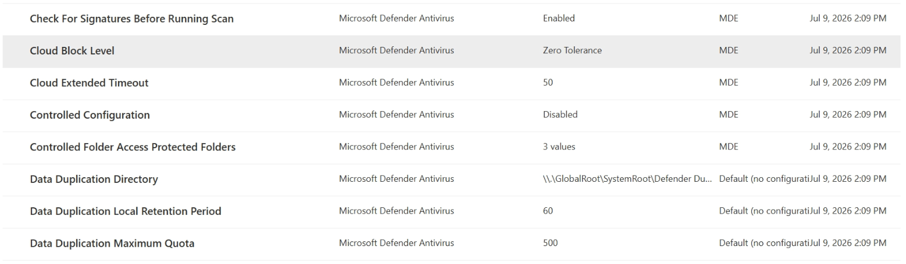
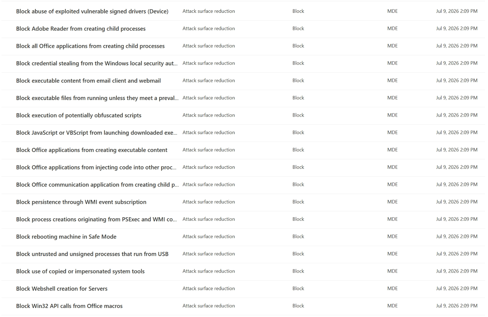
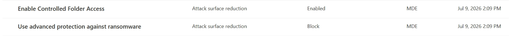
Pre-test control validation
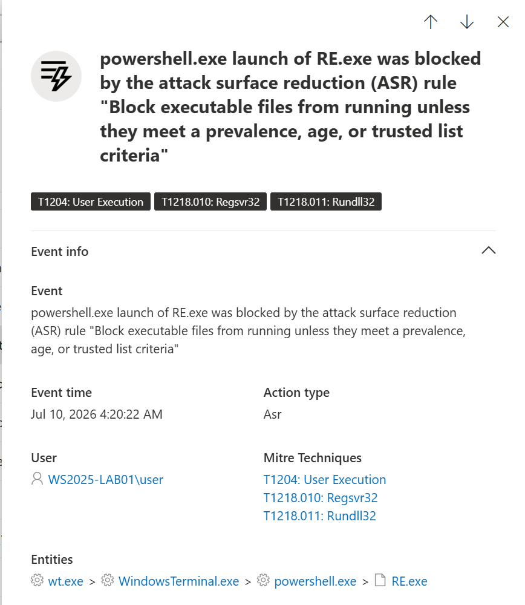
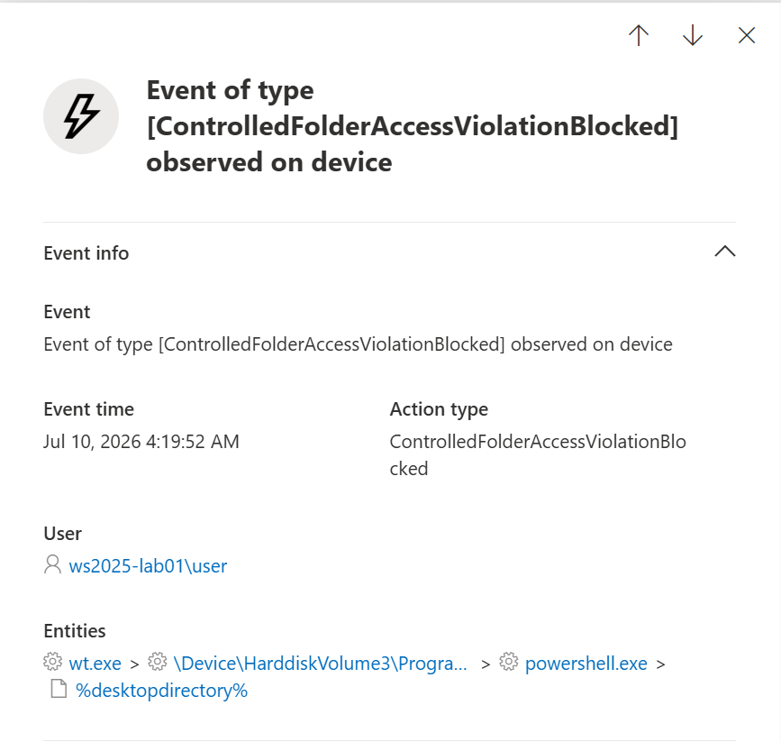
Device telemetry after ransomware execution
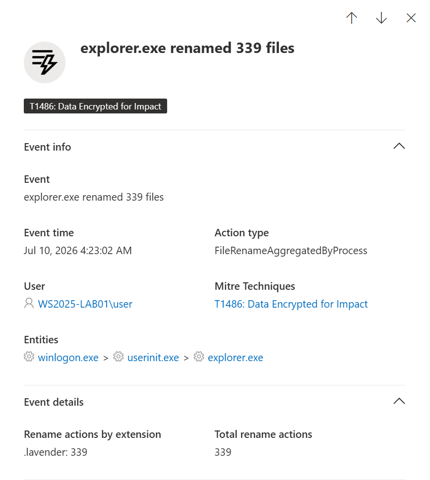
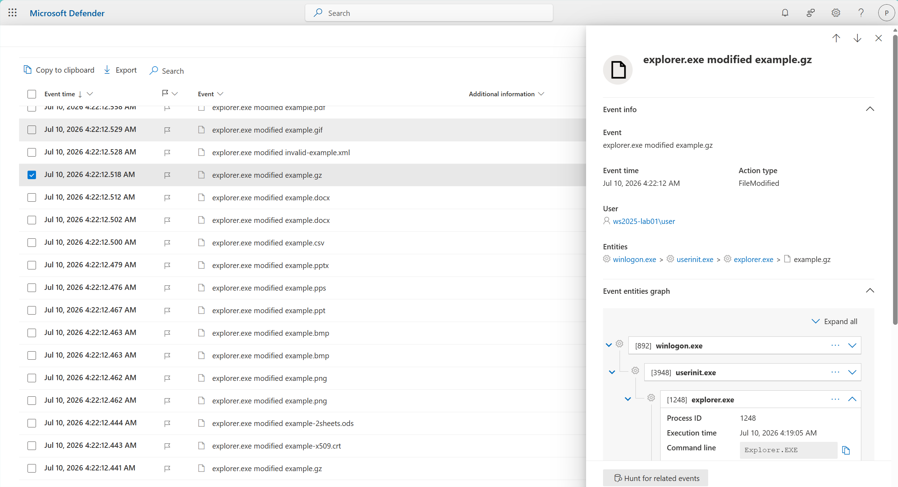
Limits of Reactive Ransomware Defenses
Controlled Folder Access (CFA) and ransomware canary files both react to specific file activity. CFA blocks untrusted writes to protected folders; canary systems flag changes to monitored files. Here, 'reactive' describes when the controls trigger and what the immediate response covers. Because uncommon legitimate software can also be blocked, a denied write alone does not classify the originating process as malicious or terminate it. A payload that avoids protected folders or canary files may not trigger the corresponding control.
Injection exposes another limit. If ransomware code runs inside a process that CFA continues to trust after injection, process identity alone cannot distinguish the payload's writes from legitimate ones. That does not make CFA ineffective: the payload is using a process that already has access. In the pre-test check, CFA blocked PowerShell from modifying a protected file; after the payload entered explorer.exe, file processing still completed.
Canary files have a similar limitation, depending on how they are implemented. If the detection logic trusts or excludes certain processes, a payload running inside one of them may avoid an alert. If every change to the canary is monitored regardless of process identity, it can still trigger detection. In this Elastic test, the canary file was encrypted without an alert. Even when a canary fires, stopping the responsible process before bulk file processing finishes still depends on detection and response speed.
C2: Similar Activity, Different Response Scope
The standalone C2 client maintained communication in the Elastic environment until the server sent a PowerShell command to add a current-user startup entry, triggering a behavioral prevention alert. The trigger appeared tied to PowerShell execution and startup persistence rather than the C2 channel itself. Elastic then terminated the standalone client, closing the existing connection. The injected C2 test behaved differently.
In the Elastic injected C2 test, I injected the client into spoolsv.exe from an administrator context. Because spoolsv.exe runs in Session 0, the client could not capture the interactive desktop, though it could still receive tasks from the server. When the client launched PowerShell directly, Elastic's Process Creation from a Stomped Module rule terminated the child process. spoolsv.exe and the injected client kept running, and the C2 channel stayed open.
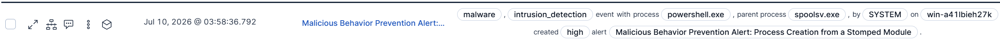
Why Was PowerShell Terminated Instead of spoolsv.exe?
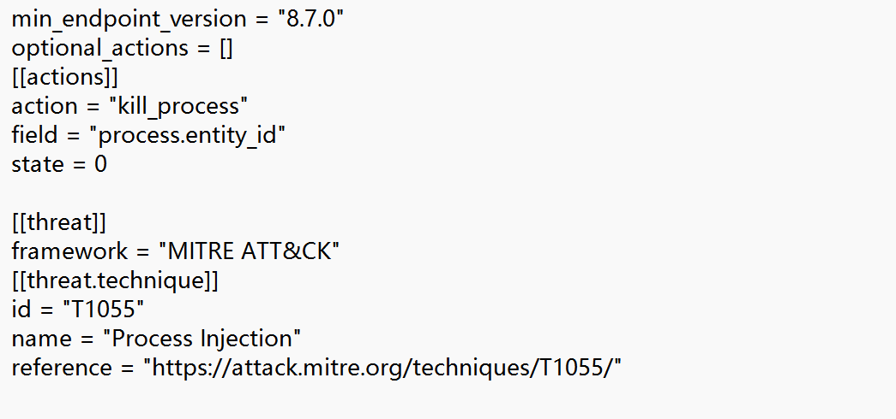
In this process-start event, the top-level process.entity_id identifies the new process represented by the event, while parent information is stored under process.parent.*. Although the rule inspects the parent process thread's call stack, its response action is bound to the top-level process entity. In this specific event, the action target is therefore powershell.exe. Note that entity_id is a data-source-provided unique process identifier, not a synonym for a Windows PID; its concrete encoding is implementation-specific.
This does not mean the rule failed: it correctly blocked child-process creation from a suspicious module context. But the parent process responsible for the activity, along with the surviving communication session, still warrants further correlation and response. Stopping one child process reduced the immediate impact of that particular action but left room for the activity to continue.
In the MDE P2 standard-user test, the client was injected into notepad.exe and communicated over HTTP, uploaded screenshots, launched PowerShell, and added a current-user startup entry. MDE recorded the related network, process, and startup activity in the device timeline but did not raise an alert or block the behavior during the test.
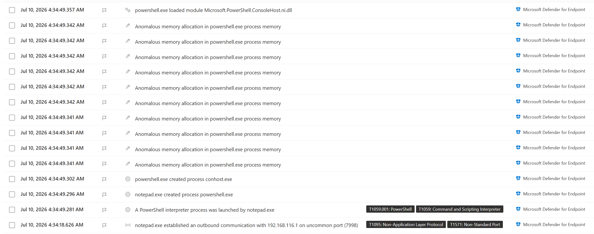
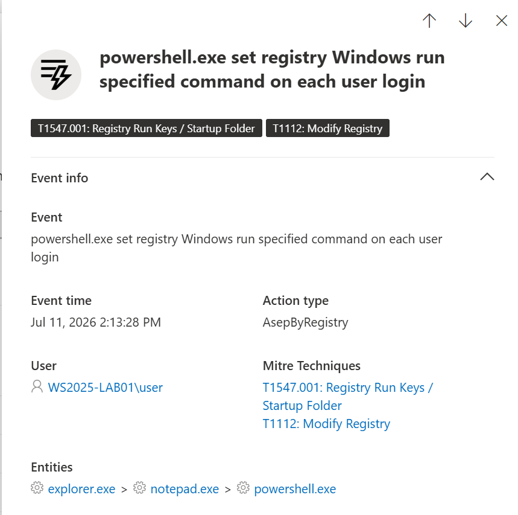
Detection, Prevention, and Visibility
Recording suspicious activity, raising an alert, and stopping it in time are separate stages. File, network, and process events in this test left evidence for later investigation; whether an analyst finds it depends on collection, retention, and timely correlation.
For ransomware, retrospective visibility can help determine the scope of damage but may come too late to stop encryption. No alert does not mean no evidence, and evidence alone does not amount to effective prevention.
Defensive Recommendations
Elastic has published several rules that combine memory attributes, call stacks, and follow-on behavior. Based on this test, the suggestions below focus on the response scope after a rule fires and on linking later file and process activity.
1. Extend the response to the parent process identified by the evidence
In the injected C2 scenario, the Process Creation from a Stomped Module rule checks suspicious module properties in the parent call stack, while the top-level process.entity_id on the process-start event identifies the new PowerShell child. Given the event semantics and the action field, it therefore makes sense that kill_process terminated PowerShell rather than spoolsv.exe. That result alone does not mean the rule failed.
But the same evidence also points to abnormal execution inside the parent. Killing one child does not mean the chain is over: in this test, both spoolsv.exe and the existing C2 channel stayed alive. For a high-confidence hit, the product could also consider the parent for a correlated alert, memory scan, containment, or termination. Whether to terminate it should still depend on confidence and how critical the process is; blindly killing a critical system service would be risky.
2. Carry suspicious module context into file activity
Some public rules already correlate suspicious memory origins with registry or file changes. In this ransomware test, however, the call sites resolved to msi.dll rather than an obviously Unbacked or private executable region. If image pages in the same process have already shown a high-confidence integrity anomaly, and high-volume writes, renames, or deletes later come from call sites attributed to that module, judging each file event only by whether the associated call-site address resolves to a module throws away important context.
A stronger signal would combine the module's memory-integrity state, the rate of file operations, the variety of affected directories and extensions, and the process's normal role. This does not mean treating every file operation from module-backed memory as malicious. It means letting file-behavior detection use the high-confidence memory evidence already established for the process.
3. Carry suspicious module state into later events
Detection that relies only on short sequences—such as a network library loading immediately after module modification—can be sensitive to module-loading order. The library may load after the anomaly, or it may already be present in the process. In the latter case, there will be no new image-load event to correlate. The same problem applies to later file, registry, and process-creation activity.
A more robust approach would be to retain state for the affected process entity and module range after a high-confidence module-integrity anomaly. That state could remain until the module unloads, the process exits, or a new check clears the risk. Later network connections, file changes, registry writes, image loads, and child processes could inherit it. Public rules do not show the full product engine, so this is something to verify—not proof that the product lacks such correlation.
4. Use deviations from a process's normal role as supporting evidence
spoolsv.exe processing user documents at scale, notepad.exe making periodic HTTP connections and launching PowerShell, and explorer.exe modifying and renaming many files in a short time—none of these fit the processes' normal roles. But a process name or role mismatch should not be enough to block activity on its own. Plug-ins, accessibility features, and security software can all produce unusual but legitimate behavior.
A role mismatch works better as supporting evidence alongside module-integrity anomalies, call-stack provenance, operation rate, and cross-event timing. Used this way, it can raise the priority of risky combinations without treating 'unusual' as a synonym for 'malicious.'
Limitations of This Evaluation
- This is not a product benchmark. Each product was tested with only a small set of configurations, versions, and activity chains, so the results cannot be generalized to all deployments.
- The two payloads differ in maturity and testing history. I completed the ransomware test payload in April 2026 and have since iterated on it and reproduced the same overall result several times, including before this recording. The C2 client was a minimal implementation written for the demonstration and was not validated over a comparable period. Their detection results should not be read as a comparison between equally mature payloads.
- This evaluation covers the full execution chain rather than isolating module stomping as the only variable. Other call-stack handling was also used during memory preparation, so not every result can be attributed to module stomping alone.
- This was not designed as a formal product benchmark with a fixed sample size, control group, or statistical plan, so I do not report detection rates, false-positive rates, or confidence intervals. The ransomware result should be read as a repeatedly verified lab observation supported by reviewable evidence. The C2 result applies only to this temporary implementation and test scenario.
Administrator and Standard-User Contexts
The MDE P2 scenarios targeting explorer.exe and notepad.exe were both run under a standard-user account.
Microsoft's description of security boundaries informed the decision to run both MDE P2 tests under a standard-user account, so that layered defenses had as much opportunity as possible to limit the activity. The activity still completed, but least privilege still mattered: it did not stop the behavior outright, yet it limited accessible resources and reduced the potential impact. These tests do not show how far the same activity could reach with administrator or SYSTEM privileges.
Conclusion
In these tests, module stomping achieved the intended call-site effect: later return addresses resolved to a loaded module. Several test runs also completed without a timely alert or block, though this experiment cannot isolate module stomping's contribution to that result. Other anomalies remained visible, and the findings do not generalize to every EDR, version, or configuration.
If I continue this research, there are two things I want to examine more closely: whether the existing memory, call-stack, file, network, and process telemetry can be correlated earlier, and whether the process or execution chain responsible for the activity is still running after a prevention action. These questions may matter more than whether any single detection fired.
Acknowledgments
I want to thank Elastic for publishing its behavioral prevention rules and security research. As a university student pursuing this research out of personal interest, I benefit directly from that transparency: it lets me analyze why a rule fired, identify the exact process targeted by a response action, and discuss the results based on evidence rather than guesswork. Whatever the outcome of this test, that openness deserves credit.
If you would like to discuss the article or a possible collaboration, you can reach me at lobeliaerinus_columbine@outlook.com, though I may not always be able to reply quickly.
References
- Elastic Security Labs — Upping the Ante: Detecting In-Memory Threats with Kernel Call Stacks
- Elastic Security Labs — Peeling Back the Curtain with Call Stacks
- Elastic Security Labs — Doubling Down on Call Stacks
- Elastic Common Schema — Process Fields
- Microsoft Learn — Attack Surface Reduction Overview
- Microsoft Learn — Monitor Controlled Folder Access
- Microsoft Learn — Controlled Folder Access Overview
- Microsoft Learn — How User Account Control Works
- MITRE ATT&CK — T1055 Process Injection
- MITRE ATT&CK — T1486 Data Encrypted for Impact
- Elastic Security Labs — Call Stacks: No More Free Passes for Malware